Musicista · Produttore · Compositore · DJ
Gaetano Di Mauro
Musicista, compositore e produttore catanese. Dall'ambient all'elettronica, dalla chitarra alla computer music. Ultimo lavoro: Rinse — 2025.
🎧 Anteprima di Rinse (2025)
Biografia
Suono come linguaggio
Gaetano Di Mauro è un musicista, compositore e produttore catanese. Appassionato di musica fin da bambino, ha iniziato a suonare la chitarra nel 1997, prima da autodidatta e poi al CESM di Catania. Le sue influenze spaziano da Pink Floyd e Pat Metheny a Miles Davis, Ennio Morricone e John Williams.
La sua discografia conta quattordici pubblicazioni tra album, EP e singoli — dall'ambient classico di Adagio Espressivo (2015) fino al recente Rinse (2025), passando per concept album come Television e collaborazioni come Interplay con Antonino Cortese.
Discografia
Passa il mouse sulla cover per vedere i brani
[Griglia cover con hover/tap da implementare nel punto 2]
Press & Reviews
La critica ha scritto di me
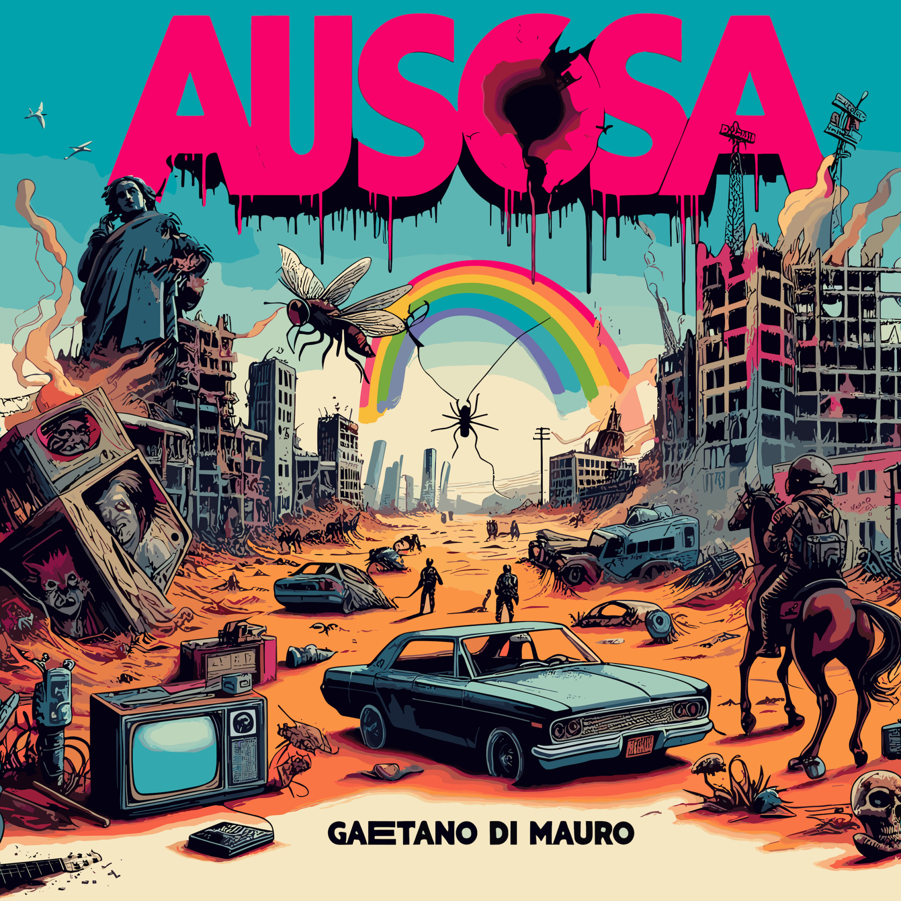
"Una narrazione interessante e più ambiziosa della stessa musica che la contiene. Echi di Pink Floyd, Moderat, Morricone, Einaudi e Metheny in un'alternanza di rock, fusion, elettronica e classica minimale."
Sergio Sciambra — Rockit.it · Ausosa, 2024
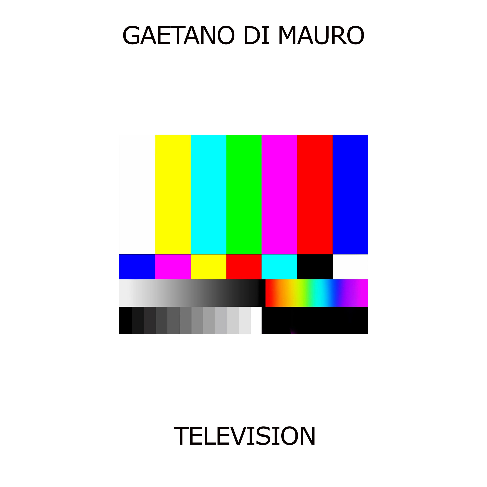
"Un disco coraggioso. Il Catanese Gaetano Di Mauro confeziona un Concept Album elettronico strumentale di grande spessore — scorre in maniera sempre piacevole tenendoti compagnia come farebbe la Tv."
AiM — Alternative Indie Music · Television, 2020 · 10/10
"La musica di Di Mauro non si limita a commentare, ma produce senso. Una vera e propria esperienza sensoriale che dalle orecchie si trasmette al cervello, creando immagini vere e proprie."
Europa e Cultura Elettronica · Television, 2020
Galleria
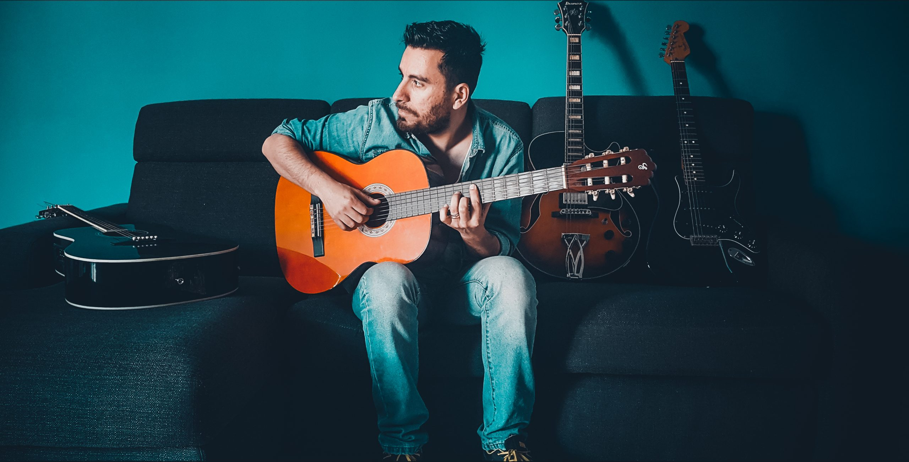
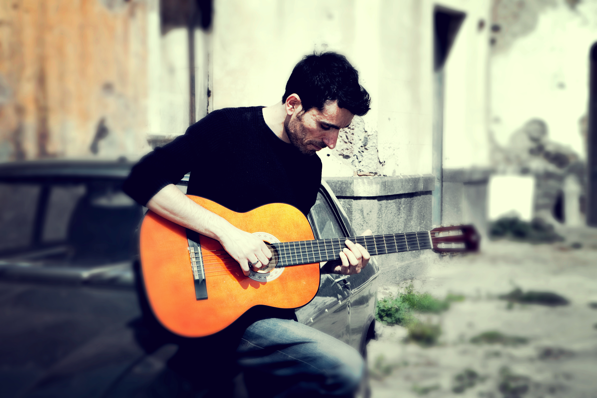
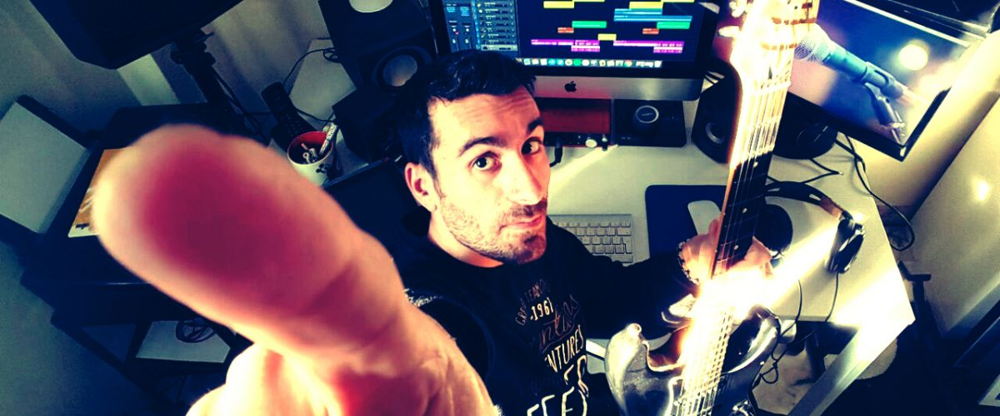
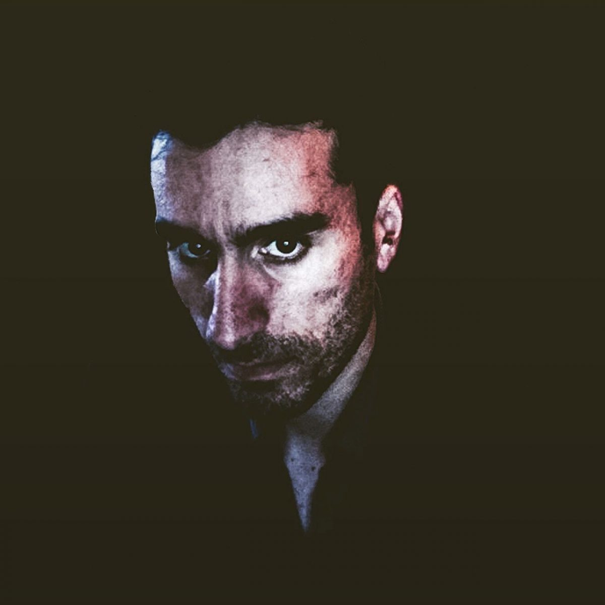
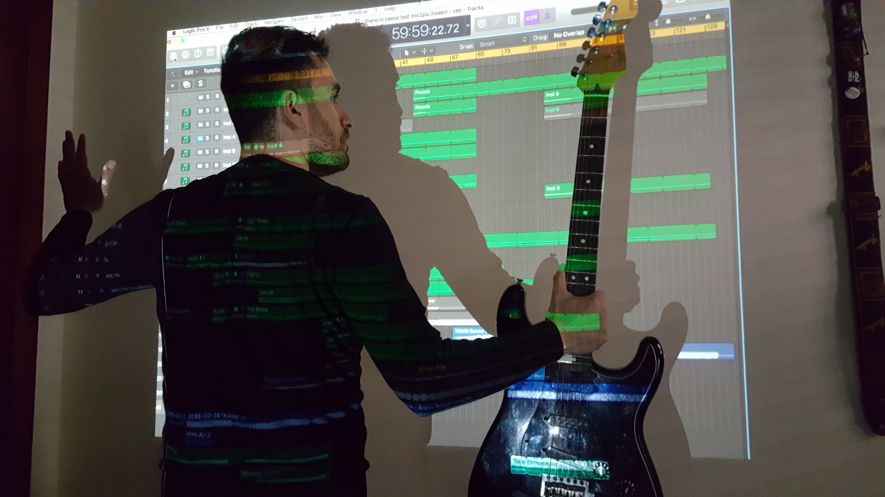
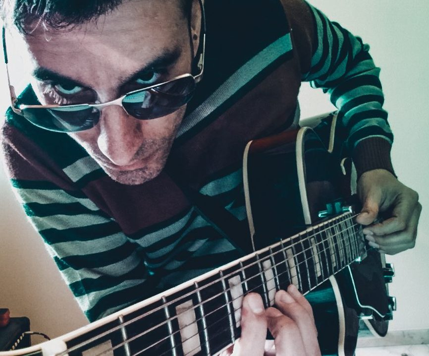
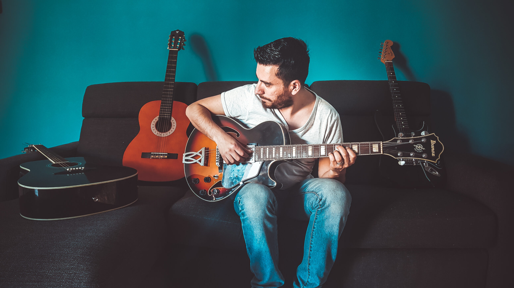
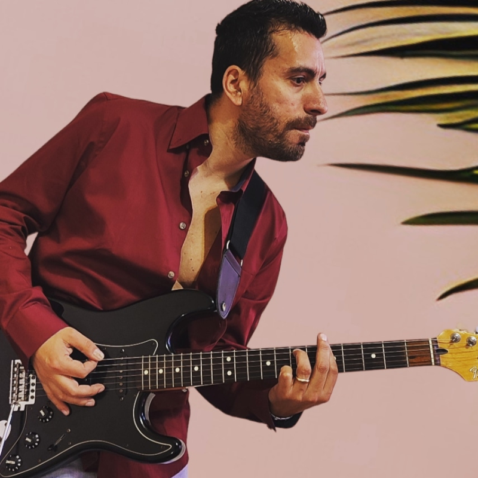
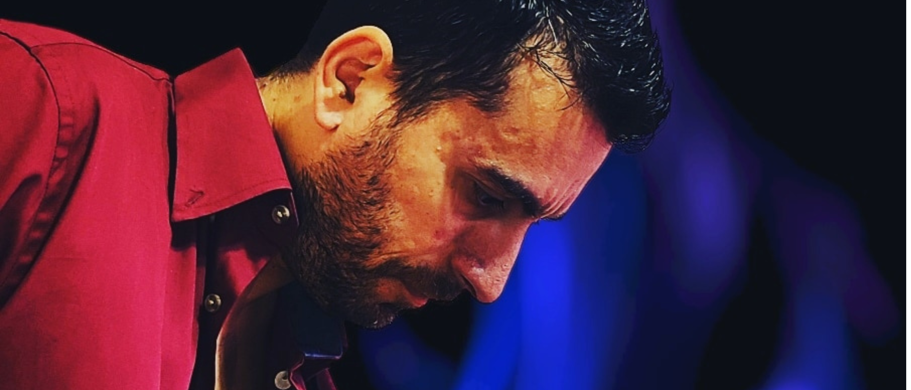
ESC / CHIUDI · ← →
Instagram · @gd_yeah
Aggiornamenti dal vivo, dietro le quinte, nuove uscite e momenti dal palco. Seguimi su Instagram per restare in contatto.
Apri Instagram ↗Account ufficiale @gd_yeah · Gaetano Di Mauro · Ultimi post
Le storie in evidenza sono visibili direttamente su Instagram.
Vedi le storie ↗DJ Set · Mix
Dietro ai piatti
Oltre alla composizione e alla produzione musicale, Gaetano porta la sua sensibilità sonora anche nei DJ set: percorsi elettronici che spaziano dall'ambient all'elettronica più sperimentale, con un'attenzione ossessiva per i dettagli e per la costruzione di atmosfere.
Ogni mix è un viaggio — non una semplice selezione di brani, ma una narrazione coerente che riflette la stessa cura che mette in ogni sua produzione originale.
Mixcloud · ∞ Set pubblicati · MC · Mixcloud · Ultimi set
Apri Mixcloud ↗Ascolta
La mia musica su tutte le piattaforme
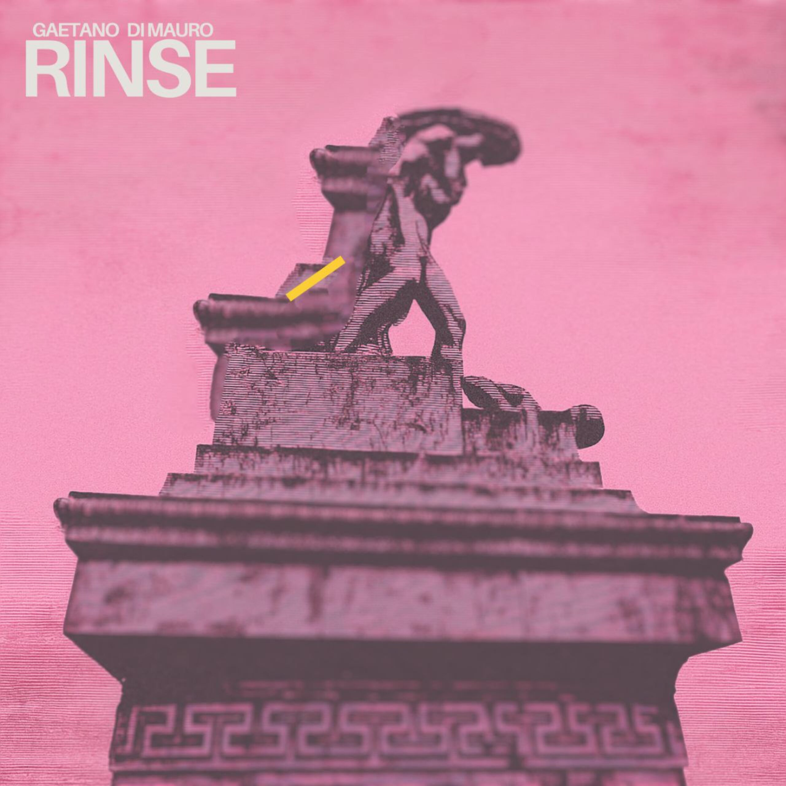
Ultimo singolo · 2025
Rinse
Gaetano Di Mauro
Strumenti & Attrezzatura
Il suono nasce dagli strumenti giusti
Le marche con cui lavoro ogni giorno — in studio e sul palco.
Chitarre & Amplificatori
Audio & Studio
DJ & Produzione
Software & DAW
Diario Sonoro
Note dal vivo
Nuovi brani in lavorazione, riflessioni sui dischi già usciti, vita da musicista. Senza filtri.
Leggi il diario →Contatti
Lavoriamo insieme
Per collaborazioni, booking e produzioni
Scrivimi